ヘルプ画面
|
Google Sketchupから Curl 3D Galleryへファイルを読み込む方法 |
|
Google Sketchupから Curl 3D Galleryへファイルを読み込む方法 まずは、Curl 3D Gallery, Google Sketchupの連携に登場するファイル拡張子をご紹介します。 xxx.skp Sketchupモデルファイルです。このファイルを実行するとGoogle Sketchupが立ち上がります。 xxx.kmz Google Earth KMZ ファイルです。 このファイルを実行するとGoogle Earthが立ち上がります。 xxx.kml (通常はdoc.kml) Google Earth KML ファイルです。このファイルはkmzファイルを解凍すると生成されます。 ここから、ファイルを変換していく方法をご紹介します。 流れは [Google Sketchup xxx.skp - Google Sketchup で エクスポート → xxx.kmz - 解凍 → xxx.kml Curl 3D Gallery で読み込み] という流れになります。 詳細な手順皆さんが３Dモデルを Google 3D Gallery から取得してくる場合、そのファイルは xxx.skp という拡張子のファイルとなっています。 ＊モデル選択の目安は1MBサイズ程度のものまでで、複雑さも中程度までのものが、Curl 3D Galleryでスムーズに動かすポイントです。 まずは、このファイルを実行し、 Google Sketchupを立ち上げます。メニューバーの[ファイル]→[エクスポート]→[３D モデル]を選択し、ファイルを任意のフォルダに保存します。このときの保存形式は、xxx.kmz となっているはずです。 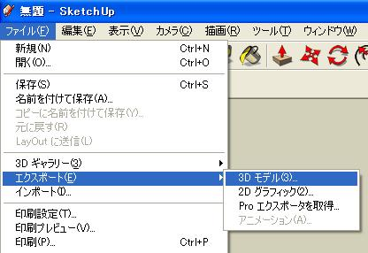 次に、この xxx.kmzファイルを解凍します。このファイルはzip形式と同様に解凍が可能です。 KMZファイル解凍の方法：ファイルをダブルクリックすると、Google Sketchupが立ち上がってしまいますので、解凍ソフト（よく出回っているものでOKです）をインストールしたのち、右クリックメニューから解凍、もしくは、ファイルの拡張子を kmz から zip に書き換えて解凍してください。 解凍先のフォルダの中に、xxx.kml (doc.kml)というファイルができていますか？ できていれば、このファイルを Curl 3D Gallery で読み込みます。 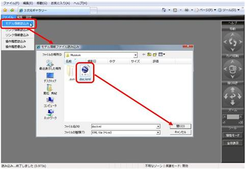 もっときれいに再現するために・イメージファイルを抽出するためには、Rubyのdxf出力サンプルをカスタマイズして使用します。
|
|
Google Sketchupのダウンロードはこちらから。
Curl 3D Galleryで、Google Sketchupからエクスポートされたファイルを読みだす方法
この章では、Curl 3D Galleryの基本的な操作方法をお伝えいたします。
＊操作方法は、Curl 3D Galleryに付属しているサンプルデータを使い、説明していきます。（サンプルはhttp://developers.curlap.com/gallery/appsからダウンロード）
一部の操作は、ローカルからの実行のみに限られていますので、ご注意ください。
まずは、Curl 3D Galleryでできることをリストします。
・壁を認識した3D空間のウォークスルー
・リンク情報の読み込み（リンク情報とは、情報を持った画像のことです）
・リンク情報の貼り付け（ローカルから起動したときのみの機能になります。ローカルとサーバーで起動した場合の振る舞いの違いの説明はこちら）
リンク情報に関する機能
・リンク機能
・エレベーター機能
・モデルからモデルへの移動
・自分が動いた行動の記憶
・全体像の表示、全体像の表示からの移動
・見た目の変更
１．モデルの読み込み
起動画面はこのようなイメージです。
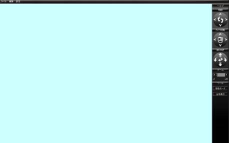
「モデル情報読込み」にて、モデル情報ファイルを読み込みます。（"3D-Gallery\data\Musiam\doc.kml"）
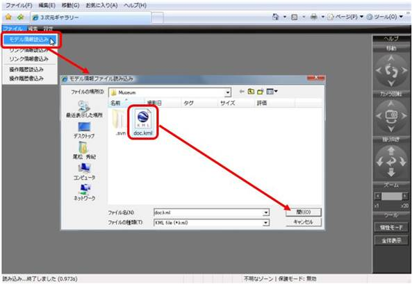
モデル情報が読み込まれた状態
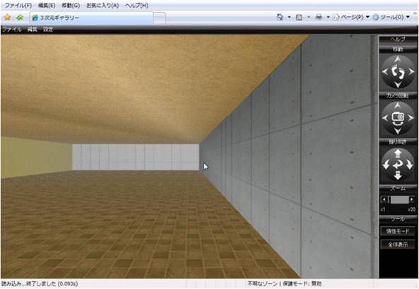
続いて、基本的な操作です。
２．基本的な操作の説明
操作に関する、画面右側のコントローラに関しては、こちらを参考にしてください。
次に画面上部にある各メニューの説明です
ファイル
モデル情報読み込み … モデル情報を読み込みます。
リンク情報読み込み … リンク情報を読み込みます。
リンク情報書き込み … リンク情報を書き込みます。
操作履歴書き込み
… 操作履歴を読み込みます。
操作履歴読み込み
… 操作履歴を書き込みます。
編集
リンク情報設定
… リンク情報の新規作成、既存編集を行います。
リンク情報リスト
… リンク情報をリスト形式で表示し、編集、削除を行います。
操作履歴登録
… 操作履歴登録ダイアログを表示します。
操作履歴再生
… 操作履歴を再生します。
操作履歴クリア
… 操作履歴をクリアします。
設定
カメラ リセット
… カメラを起点位置に戻し、カメラパラメータも初期地に戻します。
パラメータ設定
… カメラ パラメータ設定ダイアログを表示します。
３．リンク情報の読み込み
リンク情報とは、壁や床に張られた、情報を持つイメージ画像の情報のことです。
「リンク情報読込み」にて、リンク情報ファイルを読み込みます。 （"3D-Gallery\data\Musiam\Link.inf"）
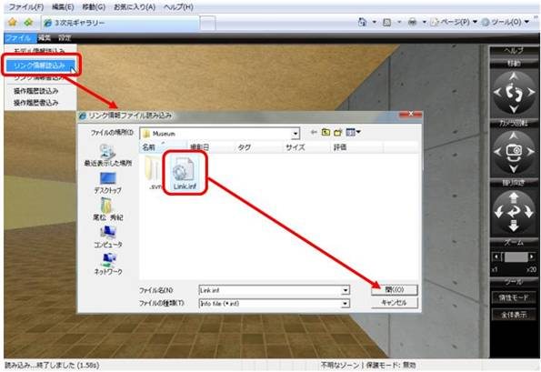
リンク情報が読み込まれた状態
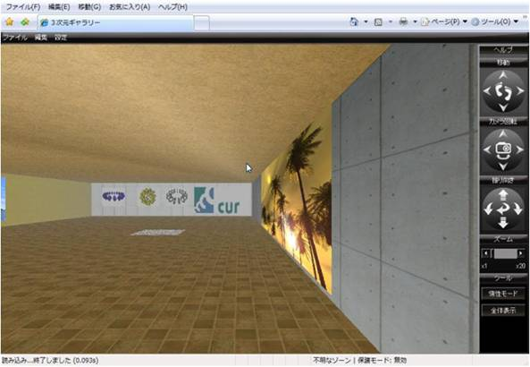
４．操作履歴情報の読み込み
操作履歴情報とは、自分の動いた動作記録のことです。操作履歴の作成方法は別の章でご説明いたします。
「操作履歴情報読込み」にて、操作履歴情報ファイルを読み込みます。 （"3D-Gallery\data\Musiam\History.ope"）
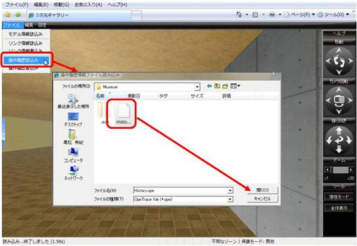
操作履歴情報が読み込まれた状態
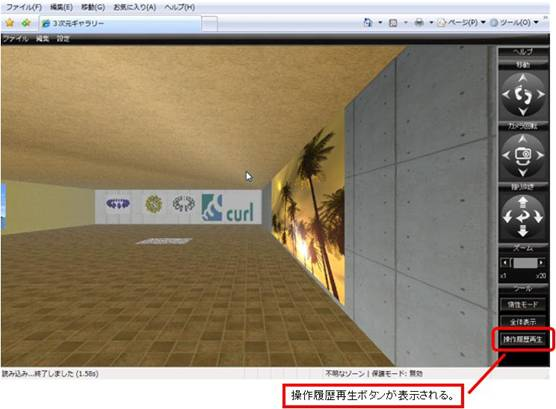
５．全体表示
全体表示では、モデルの上空から、モデルを眺め、指定したポイントに移動することが可能になります。
図による説明はこちら
６．惰性モード
惰性モードとは、Google Earthの挙動のように惰性で動くことを可能にするモードです。
Curl 3D Galleryのダウンロードはこちらから
以降の操作は、Curl 3D Galleryをダウンロードし、ローカル環境で実行する際に可能な操作です。
Curl 3D Galleryでは、自分の操作した情報を保存し、再現することが可能です。この章では、操作履歴の設定、保存、再現方法をご紹介いたします。
メニューの[設定]→[操作履歴登録]から、操作履歴を登録します。
操作履歴登録画面の説明
操作履歴数
記憶している操作履歴の数が表示されます。
自動登録
マウスオペレーション、移動操作、カメラ回転による操作を自動的に履歴に記憶します。
操作の時間間隔も実時間で記憶されます。
操作履歴登録
現在位置、カメラ方向を記憶します。本登録では、前回の操作位置から滑らかな移動
を行います。滑らかさは、分割数により調整できます。
操作履歴は、追記されます。 クリアしたい場合は、メニューの「操作履歴クリア」で行います。
メニューの[設定]→[操作履歴再生]から、操作履歴を再生します。
操作履歴再生画面の説明
実行／中断
トグルボタンとなっており、押下中、操作履歴を再生します。
繰り返し再生
操作履歴が最後まで再生された際に、最初に戻るのかを指定します。
実行状況
再生中の操作履歴と操作履歴数を表示します。
スクロールバーの移動により、任意の操作履歴を表示することができます。
図での説明はこちらをご覧ください。
{kind=link}
操作履歴ファイルの構造の情報についてはこちらをご覧ください。
Curl 3D Gallery のダウンロードはこちらから
Curl 3D Galleryでは、壁や床にリンク情報を画像ともにはりつけることが可能です。
この章では、どのようにリンク情報を扱うかを説明します。
リンク情報の作成
リンク情報の作成、編集は、「リンク情報設定」メニューを押下します。
「配置面指示」ボタンを押下して、貼り付ける面を指示します。
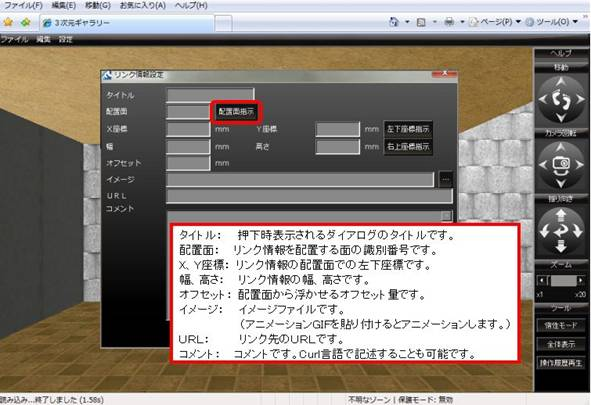
貼り付ける面の張り付けたい位置の左下座標を指示します。
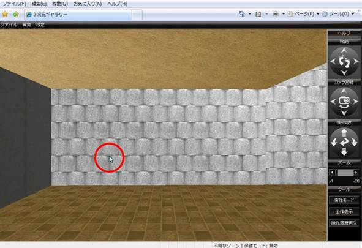
指示された面のＩＤ番号と左下座標が反映されます。
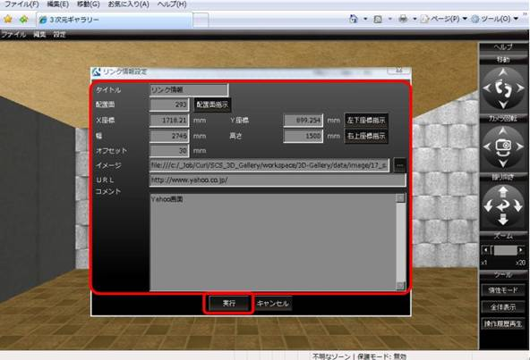
各パラメータの値を設定し、「実行」ボタンを押下します。（右上座標も画面指示できます。）
指示した面に貼り付けられます。
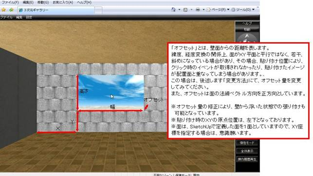
リンク情報を押下すると、指定した内容のポップアップ画面が表示されます。
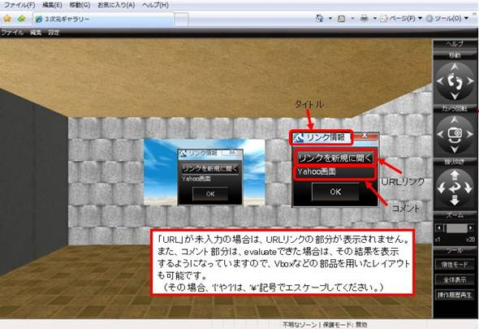
「リンクを新規に開く」をクリックすると、新規ウインドウで、設定したURLリンクのページを開きます。
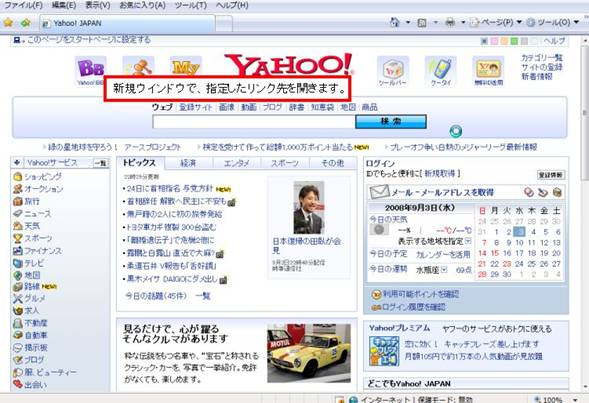
リンク情報の編集
イメージリンク情報の変更は、「リンク情報設定」メニューを押下します。
「配置指示」ボタンを押下して、変更するリンク情報を指示します。
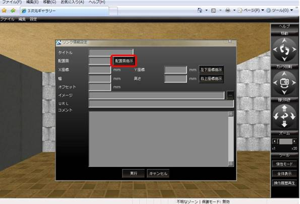
更新するリンク情報を指示します。
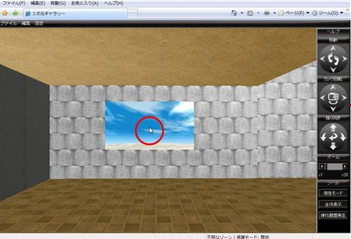
ダイアログボックス内には、選択されたリンク情報の内容が反映されます。
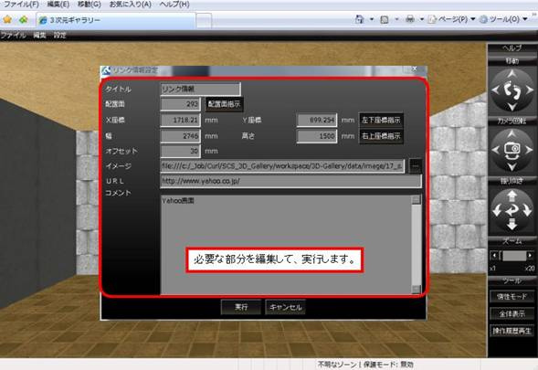
リンク情報は、「リンク情報リスト」による編集も可能です。（削除はこちらから行います。）
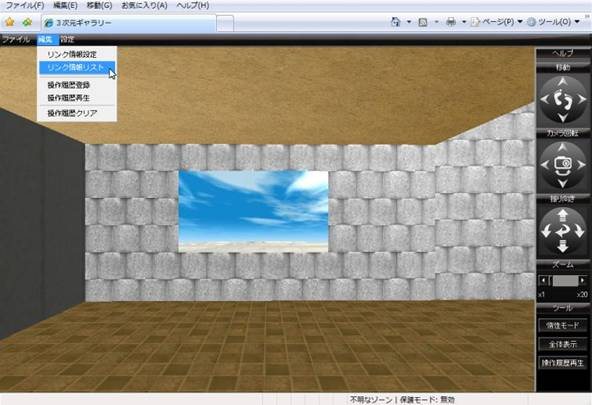
リンク情報が、一覧表示されます。表の左側で列を選択し、編集、もしくは、削除が行えます。
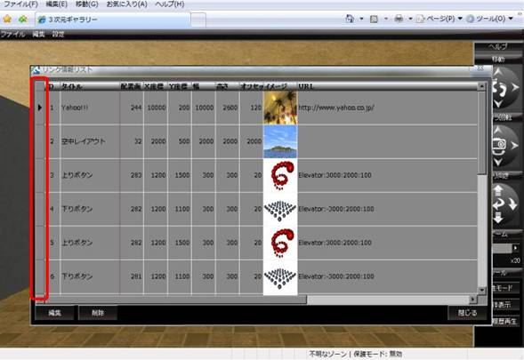
リンク情報を選択し、「削除」ボタンを押下すると、
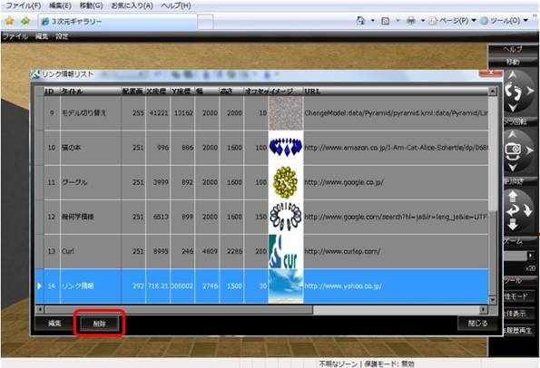
削除確認ダイアログが表示され、「OK」ボタンで、リンク情報を削除できます。
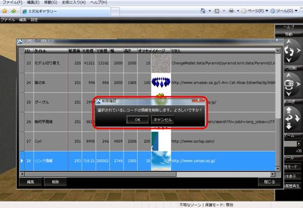
リンク情報を選択し、「編集」ボタンを押下すると、
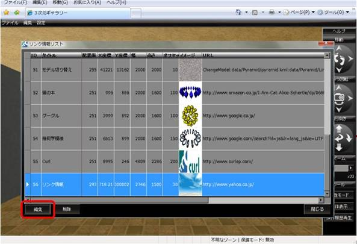
リンク情報設定ダイアログに内容を反映して表示されます。
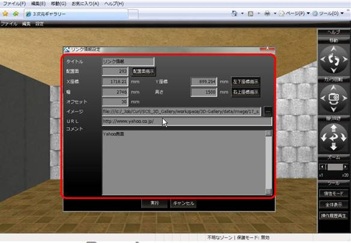
内容を修正して、「実行」ボタンを押下すると、
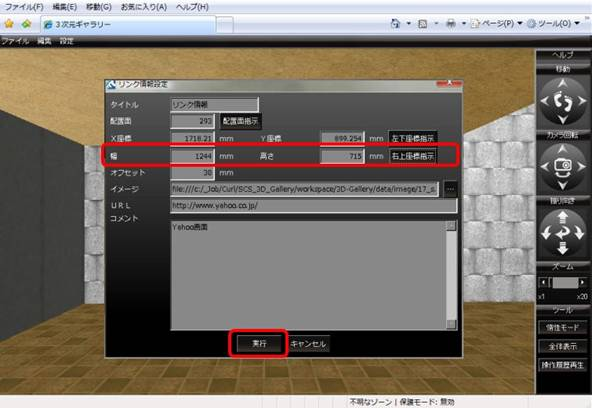
変更内容が反映されます。（実際には、リスト画面に戻ります。）
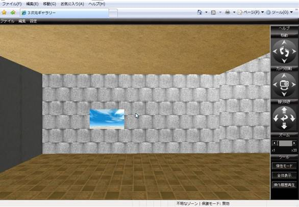
エレベータ機能
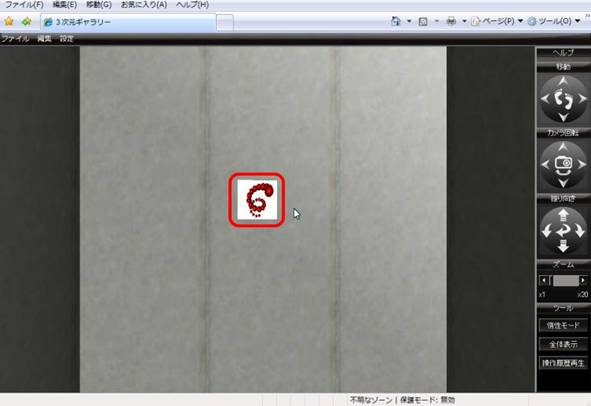
離れた場所で押しても、ダイアログが表示されるだけですが、
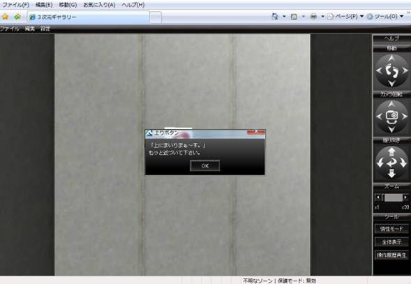
近づいて押すと、上に登っていきます。

サンプルのリンク情報では、
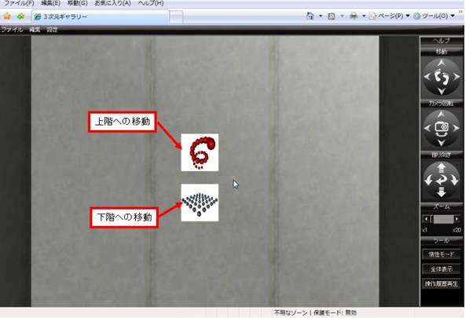
エレベータ機能の設定方法
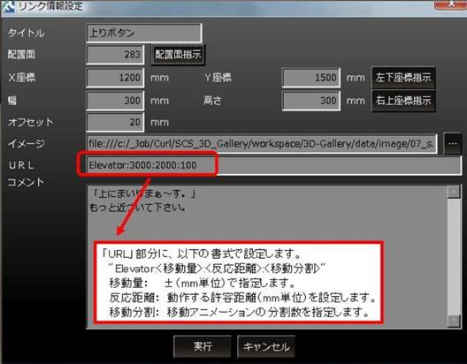
モデル切り替え機能
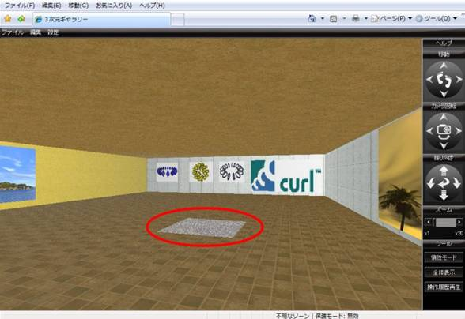
イメージの真上まで来ると、ダイアログが表示され、モデルが切り替わります。
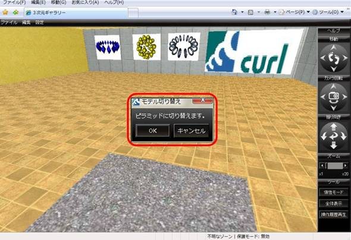
モデル切り替え機能の設定方法
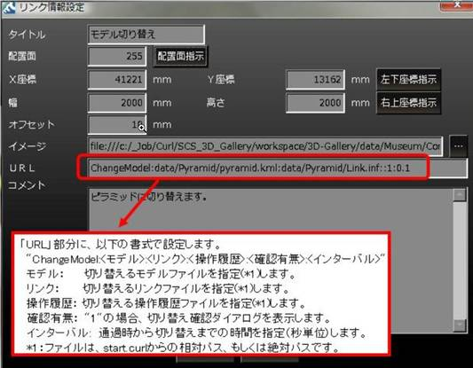